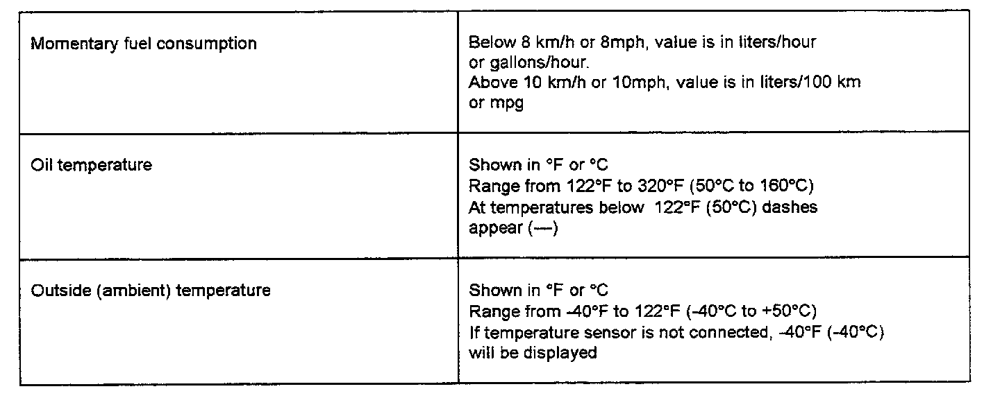
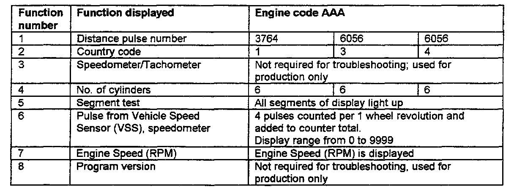

Multi-Function Indicator, Checking
1. Operation and function
The Multi-function indicator is an integral pant of the instrument cluster and consists of an electronic processor unit and a digital display unit.
Electrical signals from external components (sensors and control modules) are fed into the electronic unit, processed and stored. The results can be shown as figures in the display.
Mode select switch (E 86) and memory switch (E 109) are located in the wiper switch lever.
The following signals are processed by the Multifunction indicator:
- Pulse from Vehicle Speed Sensor (VSS) speedometer (G 22)
- Resistance change from oil temperature sensor (G 8)
- Resistance change from outside air temperature sensor (G 17)
- Fuel consumption signal from engine control module
- Pulse from terminal TD/terminal W (terminal 1 in wiring diagram)
When ignition is switched on, the time is displayed until the Multi-function indicator mode select switch (E 86) is pressed. When the mode select switch (E 86) has been operated, the cursor (triangular symbol in display) points to the selected function and the stored data appears.
If the mode select switch (E 86) is pressed briefly and repeatedly, different functions appear one after the other.
Sequence of functions:
- Time (in hours and minutes)
- Driving time (max. 100 hours)
- Distance driven (max.10,000 km or 10,000 miles)
- Average speed (in km/h or mph)
- Average fuel consumption (liters/100 km or miles/gallon)
At speeds below 8 km/hr or 8 mph the average consumption display switches to liters/hour or gallons/hour.
- Engine oil temperature (in degrees Celsius or Fahrenheit)
At temperatures below 122 °F (50 °C) dashes appear.
- Outside (ambient) temperature (in degrees Celsius or Fahrenheit)
When ignition is on, the sensor values for driving time, distance driven and fuel consumption are recorded continuously and stored. The calculation of the average speed and the average fuel consumption only takes place when that function is called up.
1.1 Driving data memory
The Multi-function indicator contains two selectable memories:
- Memory 1: Single trip memory
- Memory 2: Total trip memory
The data in these memories can be displayed using the mode select switch (E 86).
The two memories collect all driving data as long as the ignition is on. Both memories can be cancelled manually, see 1.3. If the capacity in one memory is exceeded, all data in this memory will be cancelled.
Memory 1 (single trip memory) will automatically be cancelled when ignition is switched on if the ignition was previously switched off continuously for longer than 120 minutes.
1.2 Multifunction indicator mode select switch (E 86) and memory switch (E 109)
1.2.1 Position 1 of Multi-function indicator memory switch (E 109)
In position 1 the contents of the single trip memory can be displayed. With ignition on, and until the ignition is switched off, the following driving data is collected:
- Driving time
- Distance driven
- Fuel consumed
From this data the average speed and the average fuel consumption is calculated and stored. If the trip is continued within 2 hours of switching off the ignition, the new values are included in the calculation.
1.2.2 Position 2 of Multi-function indicator memory switch (E 109)
In position 2 the contents of the total trip memory can be displayed. The following data from any number of single trips is collected:
- Driving time (up to 100 hours)
- Distance driven (up to 10,000 km/miles)
- Fuel consumed (1,000 liters/gallons)
From this data the average speed and consumption for all single trips is calculated and stored. If one of the given maximum memory capacities is exceeded, the memory is cancelled and the calculations start over once again.
Contrary to the single trip, the total trip memory is not cancelled after switching the ignition off for two hours.
1.3 Cancelling the memories
Both memories can be cancelled separately with the ignition on. To cancel memories, slide memory switch (E 109) fully left (for memory 1) or fully right (for memory 2) into position 0 and hold longer than 1 second.
If the battery is disconnected, then both memories are cancelled automatically.
1.4 Setting the time
To set the time there are two buttons on the right, below the tachometer. The upper button is for the hours and the lower button for the minutes.
Pressing the appropriate button briefly will advance the time one hour or one minute. With button depressed, hours or minutes will advance continuously.
With the minute button the time can be set exactly to the second as follows:
- Press minute button until time displayed is one minute before time to be set.
- Press minute button at the moment when the second hand of an accurate watch shows a full minute or when the time signal is heard on the radio.
1.5 Multifunction indicator check mode test
If the display values for the momentary fuel consumption, oil temperature or outside air (ambient) temperature are inaccurate, perform check mode test before attempting repairs.
1.5.2 Calling up Multifunction indicator check mode test
- Set Multifunction indicator memory switch (E 109) to position 1 (single trip memory)
- Switch ignition on
- Wait until "total" appears in display window in speedometer (G 21)
- Press and hold mode select switch (E 86)
- Switch ignition off, then back on
- Release mode select switch (E 86)
The value for momentary fuel consumption appears in the display. Press and release mode select switch (E 86) to call up oil temperature, then outside air (ambient) temperature.
The cursor in the display points to the selected function. The data in the display is aligned on the right hand side.
Multifunction indicator check mode displays:

1.6 Instrument cluster, checking
The electronic components and instruments in the instrument cluster must match the appropriate vehicle equipment. The electronic unit in each instrument cluster has an integrated test mode which can be checked to determine whether the cluster has the correct electronic components and instruments to ensure that the vehicle specific input signals are processed properly and shown in the display.
This check mode for the instrument cluster can be used for troubleshooting and should be checked in all cases of complaints concerning the functioning of the instrument cluster.
1.6.1 Calling up instrument cluster check mode test
- Set multi-function indicator memory switch (E 109) to position 2 (total trip memory)
- Switch ignition on
- Press trip odometer reset button and hold down
- Switch ignition off then back on again
- Release odometer reset button
For approx. 1 second the function number appears in the display window of the speedometer. The display then disappears for approx. 0.5 second and afterwards the data for the selected function is displayed continuously. Press and release odometer reset button to advance to next function.

Country codes:
1 - All countries (including Canada), except USA and Great Britain
3 - Great Britain
4 - USA
Distance pulse number:
If the displayed value does not match the value in the table, the distance driven will be recorded incorrectly.
The distance pulse number is a constant, engine specific value. The distance pulses for any given driven distance can be calculated using the number in the table.
Example: Distance pulse number (from table) x driven distance (miles or km) = pulses for given distance
6056 x 0.5 = 3028
2. Troubleshooting
NOTE: If the Multi-function indicator shows signs of malfunctioning such as, for example, unrealistic displays or no reaction to switch operation, disconnect battery ground strap (obtain radio security code first) then reconnect. This will cancel all Multi-function indicator memories and zero the electronic unit.
2.1 Clock inaccurate
- Reset clock
- Time deviation of 5 seconds/24 hours is permissible
- If clock deviates more than 5 seconds/24 hours, replace instrument cluster
2.2 Total or single trip memory of Multifunction indicator not OK
2.2.1 Memories cannot be switched over or controlled
See Multifunction indicator mode select switch (E 86), memory switch (E 109) and wiring, checking. MFI Mode Select and Memory Switch and Wiring, Checking
If mode select switch (E 86), memory switch (E 109), and wiring check OK, replace instrument cluster.
2.2.2 Memories cannot be cancelled or are permanently cancelled (do not store information)
- Switch ignition on
- Set memory switch (E 109) to position 1:
Time is displayed
- Press mode select switch once:
Driving time (stored value) is displayed
- Slide memory switch (E 109) fully left from position 1 to position 0 and hold for longer than 1 second:
The display goes to 0:00 and changes to 0:01 after 1 minute
- If function is OK slide memory switch (E 109) fully right past position 2 to position 0 and hold for longer than 1 second
The display goes to 0:00 and changes to 0:01 after 1 minute
If one or both memories cannot be cancelled,
See Multi-function indicator mode select switch (E 86), memory switch (E 109) and wiring, checking. MFI Mode Select and Memory Switch and Wiring, Checking
If the mode select switch (E 86), memory switch (E 109), and wiring is OK:
Replace instrument cluster.
2.3 Driving time remains at 0:00
See Multi-function indicator mode select switch (E 86), memory switch (E 109) and wiring, checking. MFI Mode Select and Memory Switch and Wiring, Checking
It the mode select switch (E 86), memory switch (E 109) and wiring is OK:
Replace instrument cluster.
2.4 Driving distance remains at 0
If the speedometer (G 21) is also malfunctioning , see Vehicle Speed Sensor, speedometer (G 22), checking. Vehicle Speed Sensor, Speedometer (G 22), Checking
If the wiring and pulses from Vehicle Speed Sensor (G 22) are OK:
See Multi-function indicator mode select switch (E 86), memory switch (E 109) and wiring, checking. MFI Mode Select and Memory Switch and Wiring, Checking
If the mode select switch (E 86), memory switch (E 109) and wiring is OK, replace instrument cluster.
2.5 Driving distance not accurate
Deviations up to max +/- 4% between actual and calculated driving distance are permissible. If the deviation is more than 4%, see Vehicle Speed Sensor, speedometer (G 22), checking. Vehicle Speed Sensor, Speedometer (G 22), Checking
If the wiring and pulses from the Vehicle Speed Sensor (G 22) are OK, replace instrument cluster.
2.6 Average speed display remains at "0" or display not accurate
Check driving distance display and driving time display . If driving time and distance are also inaccurate, continue troubleshooting with 2.3, 2.4 or 2.5.
If the driving time and distance displays are OK:
Replace instrument cluster.
2.7 Average fuel consumption display not accurate
If the average speed display and driving distance display are also inaccurate, continue troubleshooting with 2.4, 2.5 or 2.6
If the average speed and driving distance displays are OK:
Check fuel consumption signal from engine control module (see Diagnostic Trouble Code (DTC) checking using VAG 1551.
If the consumption signal from engine control module is OK: Check wiring from engine control module to instrument cluster according to wiring diagram.
If the wiring is OK: Replace instrument cluster.
2.8 Oil temperature display inaccurate
See Oil temperature display, checking.
2.9 Outside (ambient) temperature display inaccurate
See Outside (ambient) temperature display. Testing and Inspection